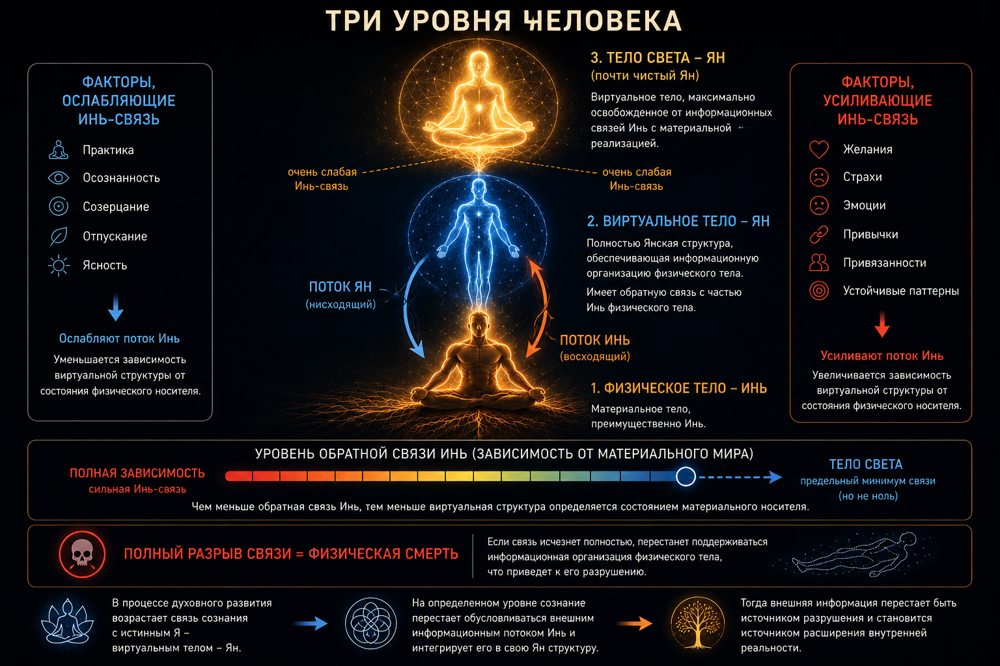

The Informational Image as a Mechanism of Interaction with Physical Reality

Abstract
The article proposes a hypothetical model in which the informational image is considered as a structured state of the informational level of reality, capable of interacting with a physical system through phase coupling at the quantum level.
In the model, phase coupling creates a communication channel, while the image represents the content of the informational exchange. The exchange itself is not regarded as a direct transfer of energy. Information changes the state of the quantum level by restructuring the probability distribution, and the resulting change in the quantum state manifests at the physical level as a change in the energetic state of the system.
Two examples of such interaction are described: coupling the image of the Sun with the physical interface of a human being, and coupling the physical body with its virtual body.
1. The Image as a Form of Informational Interaction
In the proposed model, the informational image is not merely a mental representation of a physical object. It is considered an independent structured form of information corresponding to a particular state of the informational level.
A physical object and its informational image may exist in a coupled state. In this case, the image does not directly transmit energy to the physical object. It establishes a particular structure of informational interaction.
The fundamental condition for such interaction is phase coupling.
If the phase structure of the informational state corresponds to the phase structure of the quantum state of the physical system, a stable communication channel arises.
Thus:
phase creates the channel; the image carries the information.
2. Mechanism of Interaction
The proposed mechanism can be represented as a sequence:
image → phase coupling → informational exchange → restructuring of the quantum state → energetic manifestation.
The physical system does not receive energy directly from the informational channel.
The informational exchange changes the state of the quantum level. As a result, the probability distribution of quantum states changes, leading to a redistribution of energy at the physical level.
Conventionally, this process can be written as:
where Ψ is the initial quantum state, and Ψ′ is the state after informational influence.
Accordingly, the energetic state of the physical system also changes:
Thus, in the proposed model, information is not a form of energy. It acts as a factor determining the restructuring of the quantum state, while energy is the physical manifestation of this restructuring.
3. Example: The Image of the Sun
The first example concerns coupling with the Sun.
The image of the Sun is superimposed on the corresponding physical interface of the organism. In this case, the lower Dantian is considered.
When correspondence is established between the image and the physical interface, phase coupling arises:
Once coupling is established, an informational exchange channel arises.
What is transmitted through this channel is not solar energy in the ordinary physical sense. The informational image of the Sun acts upon the quantum state of the coupled system.
In the proposed model, this leads to a restructuring of quantum probabilities, resulting in a change in the energetic state of the physical interface.
Schematically:
Thus, the physical effect is associated not with the direct transfer of energy from the Sun, but with informational interaction through the coupled image.
4. Example: Interaction with the Virtual Body
The second example uses the same mechanism, but the source of the informational image is the virtual body.
The physical body and the virtual body are considered as interconnected informational structures.
After phase coupling is established between them, an exchange channel arises:
In this case, the virtual body acts as the source of an informational image corresponding to the energetic state of the virtual level.
Informational exchange through the coupled channel changes the state of the quantum level of the physical organism. The change in the probability structure leads to a corresponding energetic manifestation at the physical level.
5. Why Phase Is Decisive
In modern quantum mechanics, the quantum state is described by a complex amplitude. In the simplest case:
where A is the amplitude and φ is the phase.
In the proposed model, phase itself is considered the condition for matching the informational and quantum structures.
With phase matching:
the possibility of stable coupling arises.
Therefore, in this model, phase functions as a kind of channel tuning. Without the corresponding phase coupling, informational exchange is not established.
At the same time, the content of the exchange itself is determined not by phase, but by the image.
This leads to a fundamental distinction:
phase — channel tuning; image — content of the exchange.
High-Frequency Phase Exchange.
In the proposed model, phase coupling is realized through a high-frequency exchange process at the quantum level.
This process can be regarded as a special type of phase interaction. Within the framework of this hypothesis, its possible physical interpretation is associated with a torsion field or torsion process.
In this interpretation, torsion interaction is not an independent content of the informational exchange, but a physical mechanism through which phase coupling is maintained and a channel for transmitting the image is formed.
6. Bidirectional Nature of the Exchange
Coupling in the proposed model is not strictly one-directional.
The informational image can act upon the physical state:
but after coupling is established, the physical system can also return information:
In the mathematical description of the quantum state, this corresponds to the use of the complex-conjugate amplitude:
Within the proposed interpretation, Ψ and Ψ* can be regarded as conjugate directions of phase-based informational exchange.
Their product:
gives a real, non-negative quantity.
In standard quantum mechanics, the squared modulus is related to probability according to the Born rule. In the proposed model, this expression is additionally interpreted as the result of closing the coupled cycle of informational exchange.
This is an interpretation of the proposed hypothesis, not part of the generally accepted physical formalism.
7. Informational Restructuring and Energy
An important principle of the model is the distinction between information and energy.
The informational image is not regarded as a source of energy. Information changes the configuration of the quantum state.
Conditionally:
Thus, the energy of the physical process is regarded as the result of restructuring the quantum state, while the informational structure determines the direction of this restructuring.
This makes it possible to represent the proposed hierarchy as follows:
8. Conclusion
The proposed model considers the informational image as an active form of an informational state capable of interacting with physical reality through phase coupling at the quantum level.
- Phase coupling creates the communication channel.
- The image is the content of the exchange.
- Quantum restructuring is the intermediate mechanism.
- Energy is the physical manifestation of this restructuring.
The general scheme can be represented as follows:
Within the model, the same mechanism can be used both for interaction with an external physical object, such as the Sun, and for interaction with the virtual body.
The proposed concept is a hypothesis and represents a theoretical description of the author's practical experience. It does not claim conformity with the established formalism of modern physics and requires further theoretical and experimental investigation.